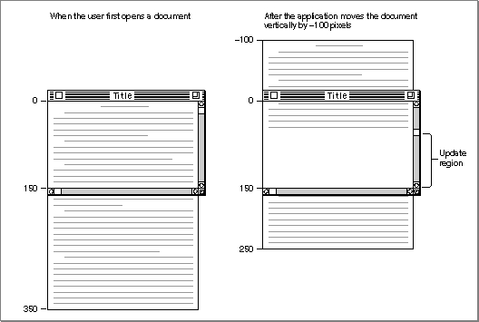
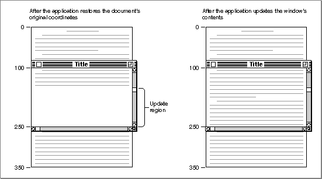
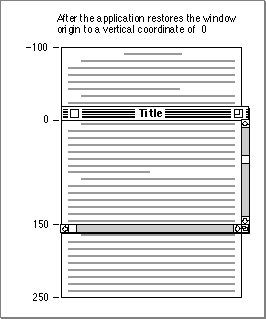

Using Basic QuickDraw
To create a basic QuickDraw drawing environment, you generallyThese tasks are explained in greater detail in the rest of this chapter. After performing these tasks, your application can draw into the current graphics port, as described in the next chapter, "QuickDraw Drawing."
- initialize QuickDraw
- create one or more graphics ports--typically, by using the Window Manager or the
NewGWorldfunction- set a current graphics port whenever your application has multiple graphics ports into which it can draw
- use the coordinate system--local or global--appropriate for the QuickDraw or Macintosh Toolbox routine you wish to use next
- move the document's bit image in relation to the port rectangle of the graphics port when scrolling through a document in a window
System 7 added new features to basic QuickDraw that were not available in earlier versions of system software. In particular, System 7 added
Before using these capabilities, you should make sure they are available by using the
- the capability to work with the offscreen graphics worlds described in the chapter "Offscreen Graphics Worlds"
- support for the
OpenCPicturefunction to create--and the ability to display--the extended version 2 pictures described in the chapter "Pictures"- additional capabilities to the
CopyBitsprocedure as described in the chapter "QuickDraw Drawing"- support for the Color QuickDraw routines
RGBForeColor,RGBBackColor,GetForeColor, andGetBackColor(which are described in the chapter "Color QuickDraw")- support for the
DeviceLoopprocedure (described in the chapter "Graphics Devices" in this book), which provides your application with information about the current device's pixel depth and other attributes- support for the Picture Utilities, as described in the chapter "Pictures" in this book (however, when collecting color information on a computer running only basic QuickDraw, the Picture Utilities return
NILinstead of handles toPaletteandColorTablerecords)Gestaltfunction with thegestaltSystemVersionselector. Test the low-order word in theresponseparameter; if the value is $0700 or greater, then the System 7 features of basic QuickDraw are supported.You can test whether a computer supports only basic QuickDraw with no
Color QuickDraw support by using theGestaltfunction with the selectorgestaltQuickDrawVersion. TheGestaltfunction returns a 4-byte value in itsresponseparameter; the low-order word contains QuickDraw version data. IfGestaltreturns the value represented by the constantgestaltOriginalQD, then Color QuickDraw is not supported.The
Gestaltfunction is described in the chapter "Gestalt Manager" of Inside Macintosh: Operating System Utilities.Initializing Basic QuickDraw
Call theInitGrafprocedure to initialize QuickDraw at the beginning of your program, before initializing any other parts of the Toolbox, as shown in the application-defined procedureDoInitin Listing 2-1. TheInitGrafprocedure initializes both basic QuickDraw and, on computers that suppport it, Color QuickDraw.Listing 2-1 Initializing QuickDraw
PROCEDURE DoInit; BEGIN DoSetUpHeap; {perform Memory Manager initialization here} InitGraf(@thePort); {initialize QuickDraw} InitFonts; {initialize Font Manager} InitWindows; {initialize Window Manager & other Toolbox } { managers here} {perform all other initializations here} InitCursor; {set cursor to an arrow instead of a clock} END; {of DoInit}When your application starts up, the Finder sets the cursor to a wristwatch; this indicates that a lengthy operation is in progress. See the chapter "Cursor Utilities" in this book for information about changing the cursor when appropriate.Creating Basic Graphics Ports
All graphics operations are performed in graphics ports. Before a basic graphics port can be used, it must be allocated and initialized with theOpenPortprocedure. Normally, you don't callOpenPortyourself. In most cases your application draws into a window you've created with theGetNewWindoworNewWindowfunction (or, for color windows,GetNewCWindoworNewCWindow), or it draws into an offscreen graphics world created with theNewGWorldfunction. These Window Manager functions (described in the chapter "Window Manager" in Inside Macintosh: Macintosh Toolbox Essentials) and theNewGWorldfunction (described in the chapter "Offscreen Graphics Worlds" in this book) callOpenPortto create a basic graphics port. See the description of theOpenPortprocedure on page 2-35 for a table of initial values for a basic graphics port.Listing 2-2 shows a simplified application-defined procedure called
DoNewthat uses the Window Manager functionGetNewWindowto create a basic graphics port for computers that do not support color. TheGetNewWindowfunction returns a window pointer, which is defined to be a pointer to graphics port.Listing 2-2 Using the Window Manager to create a basic graphics port
PROCEDURE DoNew (VAR window: WindowPtr); VAR windStorage: Ptr; {memory for window record} BEGIN window := NIL; {allocate memory for window record from previously allocated block} windStorage := MyPtrAllocationProc; IF windStorage <> NIL THEN {memory allocation succeeded} BEGIN IF gColorQDAvailable THEN {use Gestalt to determine color availability} window := GetNewCWindow(rDocWindow, windStorage, WindowPtr(-1)) ELSE {create a basic graphics port for a black-and-white screen} window := GetNewWindow(rDocWindow, windStorage, WindowPtr(-1)); END; IF (window <> NIL) and (myData <> NIL) THEN SetPort(window); END;You can allowGetNewWindowto allocate the memory for your window record and its associated basic graphics port. You can maintain more control over memory use, however, by allocating the memory yourself from a block allocated for such purposes during your own initialization routine, and then passing the pointer toGetNewWindow, as shown in Listing 2-2.When you call the
CloseWindoworDisposeWindowprocedure to close or dispose of a window, the Window Manager disposes of the graphics port's regions by calling theClosePortprocedure. If you use theCloseWindowprocedure, you also dispose of the window record containing the graphics port by calling the Memory Manager procedureDisposePtr.For detailed information about managing windows, see the chapter "Window Manager" in Inside Macintosh: Macintosh Toolbox Essentials. For detailed information about managing memory, see Inside Macintosh: Memory.
Setting the Graphics Port
Before drawing into the window, Listing 2-2 calls theSetPortprocedure to make the window the current graphics port. If your application draws into more than one graphics port, you can callSetPortto set the graphics port into which you want to draw. At times you may need to preserve the current graphics port. As shown in
Listing 2-3, you can do this by calling theGetPortprocedure to save the current graphics port,SetPortto set the graphics port you want to draw in, and thenSetPortagain when you need to restore the previous graphics port. (The procedures also work with color graphics ports.)Listing 2-3 Saving and restoring a graphics port
PROCEDURE DrawInPort (thePort: GrafPtr); VAR origPort: GrafPtr; BEGIN GetPort(origPort); {save the original port} SetPort(thePort); {set a new port} DoDrawWindow(thePort); {draw into the new port} SetPort(origPort); {restore the original port} END;In this example, the application callingDrawInPortmay need to temporarily turn an inactive window into the current graphics port for updating purposes. After drawing into the inactive window,DrawInPortmakes the user's active window the current graphics port again.
- Note
- When your application runs in Color QuickDraw or uses offscreen graphics worlds, it should use the
GetGWorldprocedure instead ofGetPort, and it should use theSetGWorldprocedure instead ofSetPort. These procedures save and restore the current graphics port for basic and color graphics ports as well as offscreen graphics worlds. See the chapter "Offscreen Graphics Worlds" in this book for more information.Switching Between Global and Local Coordinate Systems
Each graphics port has its own local coordinate system. Some Toolbox routines return or expect points that are expressed in the global coordinate system, while others use local coordinates. Sometimes you need to use theGlobalToLocalprocedure to convert global coordinates to local coordinates, and sometimes you need theLocalToGlobalprocedure for the reverse operation. For example, when the Event Manager functionWaitNextEventreports an event, it gives the cursor location (also called the mouse location) in global coordinates; but when you call the Control Manager functionFindControlto find out whether the user clicked a control in one of your windows, you pass the cursor location in local coordinates, as shown in Listing 2-4. (The Event Manager and the Control Manager are described in Inside Macintosh: Macintosh Toolbox Essentials.)Listing 2-4 Changing global coordinates to local coordinates
PROCEDURE DoControlClick (window: WindowPtr; event: EventRecord); VAR mouse: Point; control: ControlHandle; part: Integer; windowType: Integer; BEGIN SetPort(window); mouse := event.where; {save the cursor location} GlobalToLocal(mouse); {convert to local coordinates} part := FindControl(mouse, window, control); CASE part OF inButton: {mouse-down in OK button} DoOKButton(mouse, control); inCheckBox: {mouse-down in checkbox} DoCheckBox(mouse, control); OTHERWISE ; END; {of CASE for control part codes} END; {of DoControlClick}Scrolling the Pixels in the Port Rectangle
If your application scrolls a document in a window, your application can use theScrollRectprocedure to shift the pixels currently displayed for that document, and then it can use theSetOriginprocedure to adjust the window's local coordinate system for drawing a new portion of the document inside the update region of the window.Scrolling a document in response to the user's manipulation of a scroll bar requires you to use the Control Manager, the Window Manager, and the File Manager in addition to QuickDraw. The chapter "Control Manager" in Inside Macintosh: Macintosh Toolbox Essentials provides a thorough explanaticn of how to scroll through documents. An overview of the necessary tasks is provided here.
A window record contains a graphics port in its first field, and the Window Manager uses the port rectangle of the graphics port as the content area of the window. This allows you to use the QuickDraw routines
ScrollRectandSetOrigin--which normally operate on the port rectangle of a graphics port--to manipulate the content area of the window.The left side of Figure 2-5 illustrates a case where the user has just opened an existing document, and the application displays the top of the document. In this example, the document consists of 35 lines of monospaced text, and the line height throughout is 10 pixels. Therefore, the document is 350 pixels long. The application stores the document in a document record of its own creation. This document record assigns its own coordinate system to the document. When the user first opens the document, the upper-left point of the graphics port's port rectangle (the window origin) is identical to the upper-left point of the document record's own coordinate system: both have a horizontal coordinate of 0 and a vertical coordinate of 0.
In this example, the content area--that is, the port rectangle--of the window displays 15 lines of text, which amount to 150 pixels.
Imagine that the user drags the scroll box part way down the vertical scroll bar. Because the user wishes to scroll down, the application must move the document up so that more of the bottom of the document shows. Moving a document up in response to a user request to scroll down requires a scrolling distance with a negative value. (Likewise, moving a document down in response to a user request to scroll up requires a scrolling distance with a positive value.)
Using the Control Manager functions
FindControl,TrackControl, andGetControlValue, the application in this example determines that it must move the document up by 100 pixels--that is, by a scrolling distance of -100 pixels.The application uses the QuickDraw procedure
ScrollRectto shift the pixels currently displayed in the port rectangle of the window by a distance of -100 pixels. This moves the portion of the document displayed in the window upward by 100 pixels (that is, by 10 lines); 5 lines that were previously displayed at the bottom of the window now appear at the top of the window, and the application adds the rest of the window to an update region for later updating.Figure 2-5 Moving a document relative to its window

TheScrollRectprocedure doesn't change the coordinate system of the graphics port for the window; instead it moves the pixels in a specified rectangle (in this case, the port rectangle) to new coordinates that are still in the graphics port's local coordinate system. For purposes of updating the window, you can think of this as changing the coordinates used by the application's document record, as illustrated in the right side of Figure 2-5.The
ScrollRectprocedure takes four parameters: a rectangle to scroll, a horizontal distance to scroll, a vertical distance to scroll, and a region handle. Typically, when specifying the rectangle to scroll, your application passes a value representing the port rectangle (that is, the window's content region) minus the scroll bar regions, as shown in Listing 2-5.Listing 2-5 Using
ScrollRectto scroll the bits displayed in the windowPROCEDURE DoGraphicsScroll (window: WindowPtr; hDistance,vDistance: Integer); VAR myScrollRect: Rect; updateRegion: RgnHandle; BEGIN {initially, use the window's portRect as the rectangle to scroll:} myScrollRect := window^.portRect; {subtract vertical and horizontal scroll bars from rectangle} myScrollRect.right := myScrollRect.right - 15; myScrollRect.bottom := myScrollRect.bottom - 15; updateRegion := NewRgn; {always initialize the update region} ScrollRect(myScrollRect, hDistance, vDistance, updateRegion); InvalRgn(updateRegion); DisposeRgn(updateRegion); END; {of DoGraphicsScroll}The pixels thatScrollRectshifts outside of the rectangle specified by themyScrollRectvariable are not drawn on the screen, and the bits they represent are not saved--it is your application's responsibility to keep track of this data.The
ScrollRectprocedure shifts the image displayed inside the port rectangle by a distance ofhDistancepixels horizontally andvDistancepixels vertically; when theDoGraphicsScrollprocedure passes positive values in these parameters,ScrollRectshifts the pixels inmyScrollRectto the right and down, respectively. This is appropriate when the user intends to scroll left or up because, when the application finishes updating the window, the user sees more of the left and top of the document, respectively. (Remember: to scroll up or left, move the pixels down or right, both of which are in the positive direction.)When
DoGraphicsScrollpasses negative values in these parameters,ScrollRectshifts the pixels inmyScrollRectto the left or up. This is appropriate when the user intends to scroll right or down because, when the application finishes updating the window, the user sees more of the right and the bottom of the document. (Remember: to scroll down or right, move the bit image up or left, both of which are in the negative direction.)In Figure 2-5, the application determines a vertical scrolling distance of -100, which it passes in the
vDistanceparameter as shown here:ScrollRect(myScrollRect, 0, -100, updateRegion);If, however, the user were to move the scroll box back to the beginning of the document at this point, the application would determine that it has a distance of 100 pixels to scroll up, and it would therefore pass a positive value of 100 in thevDistanceparameter.By creating an update region for the window,
ScrollRectforces an update event. After usingScrollRectto move the bit image that already exists in the window, the application must use its own window-updating code to draw pixels in the update region of the window. (See the chapter "QuickDraw Drawing" in this book for information about drawing into a window.)As previously explained,
ScrollRectin effect changes the coordinates of the application's document record relative to the local coordinates of the port rectangle. In terms of the graphics port's local coordinate system, the upper-left corner of the document now has a vertical coordinate of -100, as shown on the right side of Figure 2-5 on page 2-19. To facilitate updating the window, the application uses theSetOriginprocedure to change the window origin of the port rectangle so that the application can treat the upper-left corner of the document as again having a local horizontal coordinate of 0 and a local vertical coordinate of 0.The
SetOriginprocedure takes two parameters: the first is a new horizontal coordinate for the upper-left corner of the port rectangle, and the second is a new vertical coordinate for the upper-left corner of the port rectangle.Any time you are ready to update a window (for example, after scrolling it), you can use the Control Manager function
GetControlValueto determine the current setting of the horizontal scroll bar, and you can pass this value toSetOriginas the new horizontal coordinate for the window origin. Then useGetControlValueto determine the current setting of the vertical scroll bar. Pass this value toSetOriginas the new vertical coordinate for the window origin. UsingSetOriginin this fashion lets you treat the upper-left corner of the document as always having a horizontal coordinate of 0 and a vertical coordinate of 0 when you update (that is, redraw) the document within a window.For example, after the user manipulates the vertical scroll bar to move (either up or down) to a location 100 pixels from the top of the document, the application makes the following call:
SetOrigin(0, 100);Although the scrolling distance in Figure 2-5 is -100, which is relative, the current setting for the scroll bar on the right side of the figure is now at 100.The left side of Figure 2-6 shows how the application uses the
SetOriginprocedure to move the window origin so that the upper-left corner of the document now has a horizontal coordinate of 0 and a vertical coordinate of 0 in the graphics port's local coordinate system. This restores the coordinates that the application originally assigned to the document in its document record and makes it easier for the application to draw in the update region of the window.Figure 2-6 Updating the contents of a scrolled window

After restoring the document's original coordinates, the application updates the window, as shown on the right side of Figure 2-6. The application draws lines 16 through 24, which it stores in its own document record as beginning at a vertical coordinate of 160 and ending at a vertical coordinate of 250.To review what has happened up to this point: the user has dragged the scroll box down the vertical scroll bar; the application determines that this amounts to a scroll distance
of -100 pixels; the application passes this distance toScrollRect, which shifts the document displayed in the window upward by 100 pixels and creates an update region for the rest of the window; the application passes the vertical scroll bar's current setting (100 pixels) in a parameter toSetOriginso that the upper-left corner of the document has a horizontal coordinate of 0 and a vertical coordinate of 0 in the local coordinate system of the graphics port; and, finally, the application draws the text in the update region of the window.However, the window origin of the port rectangle cannot be left at the point with a horizontal value of 0 and a vertical value of 100; instead, the application must use
SetOriginto reset it to a horizontal coordinate of 0 and a vertical coordinate of 0 after performing its own drawing, because the Window Manager and Control Manager always assume the window's upper-left point has a horizontal coordinate of 0 and a vertical coordinate of 0 when they draw in a window. Figure 2-7 shows how the application usesSetOriginto set the upper-left corner of the port rectangle back to a horizontal coordinate of 0 and a vertical coordinate of 0 at the conclusion of its window-updating routine.Figure 2-7 Restoring the window origin of the port rectangle to a horizontal coordinate of 0 and a vertical coordinate of 0

This example illustrates how to useSetOriginto offset the port rectangle's coordinate system so that you can treat objects in a document as fixed in the document's own coordinate space. Alternatively, it's possible to leave the coordinate system for the graphics port fixed and instead offset the items in a document by the amount equal to the scroll bar settings. TheOffsetRectandOffsetRgnprocedures (which are described in the chapter "QuickDraw Drawing"), theSubPtprocedure (described on page 2-49), and theAddPtprocedure (described on page 2-48) are useful if you pursue this approach. However, it is recommended that you useSetOrigininstead.The
- IMPORTANT
- For optimal performance and future compatibility, you should use the
SetOriginprocedure when reconciling document coordinate space with the local coordinate system of your graphics port.
SetOriginprocedure does not move the window's clipping region. If you use clipping regions in your windows, use theGetClipprocedure (described on page 2-44) to store your clipping region immediately after your first call toSetOrigin. Before calling your own window-drawing routine, use theClipRectprocedure (described on page 2-45) to define a new clipping region--to avoid drawing over your scroll bars, for example. (Listing 3-9 on page 3-25 in the chapter "QuickDraw Drawing" illustrates how to do this.) After calling your own window-drawing routine, use theSetClipprocedure (described on page 2-44) to restore the original clipping region. You can then callSetOriginagain to restore the window origin to a horizontal coordinate of 0 and a vertical coordinate of 0 with your original clipping region intact.